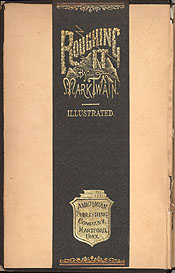

){kind=link}
){kind=link}
){kind=link}
){kind=link}
![[blank] & "Prefatory"](javascript:Start2('ripro06.jpg')){kind=link}
![[pages vi & vii] "List of Illustrations" & [blank]](javascript:Start3('ripro07.jpg')){kind=link}
![[pages viii & ix] "Illustrations" [both blank]](javascript:Start3('ripro08.jpg')){kind=link}
![[page x: blank "Illustrations" &] Contents](javascript:Start3('ripro09.jpg')){kind=link}
![[pages xii & xiii] "Contents"](javascript:Start3('ripro10.jpg')){kind=link}
![[pages xiv & xv: blank "Contents"]](javascript:Start3('ripro11.jpg')){kind=link}
){kind=link}
![[pages 20 & 21] "Getting Ready" & "Hermaphrodite Steamer"](javascript:Start3('ripro13.jpg')){kind=link}
!["Chapter II" & [page 23] "Formidable Armament"](javascript:Start3('ripro14.jpg')){kind=link}
![[pages 24 & 25] "Luxuries and Necessaries" & "Our Coach"](javascript:Start3('ripro15.jpg')){kind=link}
![[pages 26 & 27] "A New Post Office" & "A Modern Sphinx"](javascript:Start3('ripro16.jpg')){kind=link}
![Chapter III & [page 31] "Sleeping Under Difficulties"](javascript:Start3('ripro17.jpg')){kind=link}
![[pages 32 & 33] "A Long-Eared Animal" & "An Old Acquaintance Modernized"](javascript:Start3('ripro18.jpg')){kind=link}
![[pages 35 & 36] "A New Article of Diet" & "Too Tough for a Camel"](javascript:Start3('ripro19.jpg')){kind=link}
![[page 38] "Night Traveling" & "A VIEW IN THE IAO VALLEY"](javascript:Start3('ripro20.jpg')){kind=link}
![[unnumbered: blank] & "My Unprinted Poem"](javascript:Start3('ripro21.jpg')){kind=link}
![[unnumbered] "A Terrible Storm" & "The Gale Increases"](javascript:Start3('ripro22.jpg')){kind=link}
![[unnumbered] "Shortening Sail" & "Lightening Ship"](javascript:Start3('ripro23.jpg')){kind=link}
![[unnumbered] "The Shipwreck" & "The Rescue"](javascript:Start3('ripro24.jpg')){kind=link}
![[pages "1" & "2"] "Nevada Nabobs in New York" & "Chartered Shebang"](javascript:Start3('ripro25.jpg')){kind=link}
![[pages "3" & "4"] "A Fine Ride on Broadway" & "New Yorkers Become Sociable"](javascript:Start3('ripro26.jpg')){kind=link}
![Chapter XVII & [page 17-3] "Indisputable Evidence"](javascript:Start3('ripro27.jpg')){kind=link}
![[pages 17-4 & 77] "Early Mormons on a Spree" & "Bemis's Version of It"](javascript:Start3('ripro28.jpg')){kind=link}
![[page 78] "An Impromtu Circus" & "THE GREAT FLOUR SACK PROCESSION"](javascript:Start3('ripro29.jpg')){kind=link}
![[blank: unnumbered] & Chapter VIII](javascript:Start3('ripro30.jpg')){kind=link}
![[pages 71 & 72] "The Pony Express" & "Genuine Alkali Water"](javascript:Start3('ripro31.jpg')){kind=link}
![[pages 73 & "4"] "A Magnificent Ride" & "The Tarantulas Loose"](javascript:Start3('ripro32.jpg')){kind=link}
![[pages 22-5 & 22-6] "Mrs. O'Flannigan Comes to the Rescue" & "All's Well That Ends Well"](javascript:Start3('ripro33.jpg')){kind=link}
![Chapter LXXV & [page 2-75] "Preparation for Lecturing"](javascript:Start3('ripro34.jpg')){kind=link}
![[pages 3-75 & 4-75] "Valuable Assistants" & "My First Attempt"](javascript:Start3('ripro35.jpg')){kind=link}
![[page 5-75 & 6-75] "The Audience Carried" & "A Pathetic Joke"](javascript:Start3('ripro36.jpg')){kind=link}
![Chapter X & [page 81] "Slade as Division-Agent"](javascript:Start3('ripro37.jpg')){kind=link}
![[page 84] "Acts of Cruelty Perpetrated" & "FIRE AT LAKE TAHOE"](javascript:Start3('ripro38.jpg')){kind=link}
![[blank: unnumbered & page 1-73] Chapter LXXIII](javascript:Start3('ripro39.jpg')){kind=link}
![[pages 2-73 & 3-73] "The Retired Milk Horse" & "Another Horse Story"](javascript:Start3('ripro40.jpg')){kind=link}
![[pages 24-2 & 24-3] "Lake Tahoe" & "Happy Indolence"](javascript:Start3('ripro41.jpg')){kind=link}
![[pages 24-4 & 24-5] "A Conflagration" & "A Storm on the Lake"](javascript:Start3('ripro42.jpg')){kind=link}
![[pages 68 & 69] "The Cat That Eat Cocoanut" & "Truth Stranger Than Fiction"](javascript:Start3('ripro43.jpg')){kind=link}
![[pages 98 & 99] "An Entire Inhabitant" & "In Sight of Eternal Snow"](javascript:Start3('ripro44.jpg')){kind=link}
![[pages 100 & 101] "The South Pass" & "Two Long Journeys"](javascript:Start3('ripro45.jpg')){kind=link}
![[pages 102 & 51] "Old Friends Meet" & "A Dog's Experiences Continued"](javascript:Start3('ripro46.jpg')){kind=link}
![[page 17-8] "Original Kilkenny Cats" & "GOING INTO THE MOUNTAINS"](javascript:Start3('ripro47.jpg')){kind=link}
![[unnumbered: blank & page 16-2] "Brigham Young's Harem"](javascript:Start3('ripro48.jpg')){kind=link}
![[pages 16-3 & 16-4] "Search Among the Children" & "Cost of Gift to No. 6"](javascript:Start3('ripro49.jpg')){kind=link}
![[pages 16-5 & 16-6] "A Penny-Whistle Gift" & "Fathering the Foundlings"](javascript:Start3('ripro50.jpg')){kind=link}
![[pages 16-7 & 16-8] "Large Families Expensive Luxuries" & "An Attempt at Economy"](javascript:Start3('ripro51.jpg')){kind=link}
![[unnumbered] Chapter XXV & "A Mexican Plug"](javascript:Start3('ripro52.jpg')){kind=link}
![[pages 25-3 & 25-4] "Most Thoroughly Bucked" & "Old Abe Curry"](javascript:Start3('ripro53.jpg')){kind=link}
![[unnumbered] "Riding the Plug" & "Efforts to Sell"](javascript:Start3('ripro54.jpg')){kind=link}
![[pages 4-73 & 6-73] "A Picnicing Excursion" & "Compared with Vesuvius"](javascript:Start3('ripro55.jpg')){kind=link}
![[page 7-73] "An Inside View" & "LAKE MONO"](javascript:Start3('ripro56.jpg')){kind=link}
![[unnumbered: blank] & [Poster with Greeley]](javascript:Start3('ripro57.jpg')){kind=link}
![[unnumbered] [Poster with MT] & "Publisher's Announcement"](javascript:Start3('ripro58.jpg')){kind=link}
![[unnumbered] "Conditions" & [blank]](javascript:Start3('ripro59.jpg')){kind=link}
){kind=link}
){kind=link}


Manchester (NH) Daily Union 11 November 1871 |
MT's readers didn't buy Roughing It in a bookstore, but from door-to-door sales agents. Nor could they see the book before they bought it. Instead, agents showed them a prospectus that included the forthcoming book's table of contents, list of illustrations, and samples of both text and pictures. (For more on subscription publishing, see MARKETING TWAIN. For a simulation of an agent's sales talk, see Calling on a Customer.) |
Prospectus Cover  Inside Cover: Sample Binding |
The sales prospectus for Roughing It in the Barrett Collection is the first of two versions prepared by the American Publishing Company. In hopes of selling to Christmas shoppers, Bliss prepared it in November, 1871, before some of the manuscript and many of the illustrations were even finished. MT was happy with it: he wrote his wife Livy to say "I think Bliss has gotten up the prospectus book with taste & skill." But according to Harriet Elinor Smith, Bliss was sufficiently uncomfortable with its "signs of incompleteness" that he took the unusual step of putting out a revised prospectus at the end of January, 1872. The prospectus available here does contain a number of gaps and discontinuities -- for example, both the List of Illustrations and the Contents consist mainly of blank pages. The Chapters numbered 73 and 75 became 76 and 78 in the published book, and the prospectus' pages are numbered in ways that could have bewildered customers. In the "Publisher's Announcement," this prospectus also promises purchasers a volume of "Between 600 and 700 Octavo Pages." When published, Roughing It contained 591 pages, so in the revised prospectus the promise reads "Nearly 600 Octavo Pages." On the other hand, this only promises "nearly 250 illustrations," while the published book contains just over 300. Since early summer, Bliss had been urging MT to send him the best parts of the manuscript for the prospectus, but it's not clear what parts of the whole Bliss had available in the fall to choose from. You can see which parts customers were shown by looking through the pages accessible below. The entire 60-page Roughing It prospectus is available here, displayed digitally in a two-page format to reproduce the way potential buyers saw it as the sales agent flipped through it. You can access each page separately from the list of links at bottom of this page. Despite the unusual numbering schemes, pages are in the order they appear in the prospectus, and are labeled according to their headers (probably written by someone in Bliss' firm). All capital letters indicate full-page illustrations. Or you can tour 15 smaller images of pages chosen to represent the whole (these are marked by asterisks on the list). There are two different ways to "tour" them. The first allows you to "turn" the pages at your own pace, and to move backward or forward through the prospectus. If you take the "auto-tour," the pages will "flip" forward automatically (and if you're using a fast connection to the Internet, the "tour" will take about 90 seconds). |